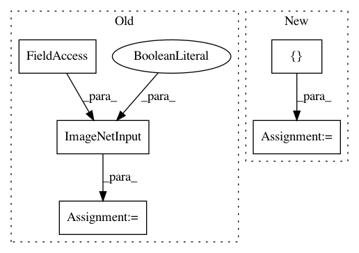

cbef674a4e8553cd3817b94b707a63d2214c7533,models/experimental/resnet50_keras/resnet50.py,,main,#Any#,151
Before Change
"generator.")
// We feed the inputs from a Python generator, so we need to build a single
// batch for all of the cores, which will be split on TPU.
imagenet_eval = imagenet_input.ImageNetInput(
is_training=False,
data_dir=FLAGS.data,
per_core_batch_size=BATCH_SIZE)
score = eval_utils.multi_top_k_accuracy(
model, imagenet_eval.evaluation_generator(K.get_session()),
EVAL_STEPS)
else:
imagenet_eval = imagenet_input.ImageNetInput(
is_training=False,
data_dir=FLAGS.data,
After Change
data_dir=FLAGS.data,
per_core_batch_size=per_core_batch_size)
callbacks = [
LearningRateBatchScheduler(schedule=learning_rate_schedule),
eval_utils.TensorBoardWithValidation(
log_dir=model_dir,
validation_imagenet_input=imagenet_validation,
validation_steps=VALIDATION_STEPS,
validation_epochs=[30, 60, 90],
eval_top_k_accuracy=FLAGS.eval_top_5_accuracy),
]
model.fit(imagenet_train.input_fn,
epochs=EPOCHS,
steps_per_epoch=TRAINING_STEPS_PER_EPOCH,
In pattern: SUPERPATTERN
Frequency: 3
Non-data size: 5
Instances
Project Name: tensorflow/tpu
Commit Name: cbef674a4e8553cd3817b94b707a63d2214c7533
Time: 2018-11-09
Author: xiejw0217@gmail.com
File Name: models/experimental/resnet50_keras/resnet50.py
Class Name:
Method Name: main
Project Name: tensorflow/tpu
Commit Name: a5364c4875ddbe5d2150a2f822fa916428f29651
Time: 2018-04-27
Author: 1517779+sb2nov@users.noreply.github.com
File Name: models/official/resnet/resnet_main.py
Class Name:
Method Name: main
Project Name: tensorflow/tpu
Commit Name: 21cd0774c8c3d41a8464427c81629075c953e7e3
Time: 2018-09-05
Author: xiejw0217@gmail.com
File Name: models/experimental/keras/resnet50.py
Class Name:
Method Name: main